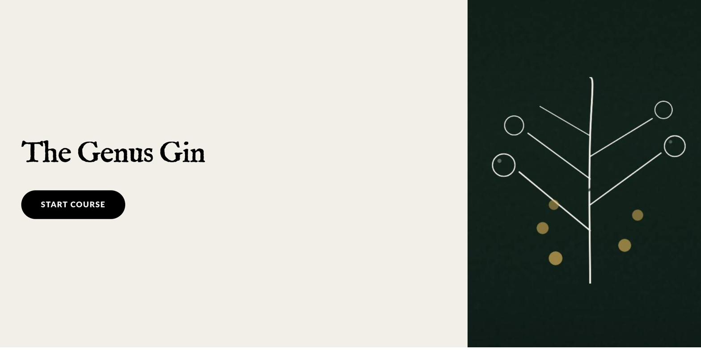

A Personal Gin Course, Built for an Audience of One
A personal gin course for my partner — and a solo experiment in building learning experiences that don't exist in any standard authoring tool.
- Role
- Sole Designer, Developer & Subject Matter Researcher
- Timeline
- 10 weeks (March – May 2026)
- Impact
- Self-taught vibe coding · transferred to colleague

My partner is curious about gin — the history, the botanicals, how one gin becomes different from another. But every "gin explainer" resource we found was either a two-paragraph blog post that read like ad copy, or a hospitality-industry course with a $400 price tag and no interactivity. Nothing in between. Nothing built for one curious person who wanted to actually understand what makes gin gin.
So I built one. Ten weeks, six chapters, eleven custom interactive widgets, one target audience of one.
The parallel goal was more ambitious: could I teach myself to code well enough to build interactive learning experiences that don't exist in any standard authoring tool? Rise, Storyline, and iSpring all have preset interactions — sliders, flip cards, drag-and-drop — but nothing that lets you build, say, a pH-responsive butterfly pea flower demonstration where the color actually changes based on liquid you pick. That specific interaction didn't exist. I wanted to see if I could make it exist.
The challenge was scope: a course thorough enough to actually teach the material, engaging enough that one person would work through the whole thing, and built entirely by someone who had never written production code before starting the project.
I structured the course as a field journal — six chapters moving from the history of gin, through production methods and grain bases, into botanicals, style variations, cocktail applications, and ending with a design-your-own-gin exercise. Every chapter had at least one custom interactive widget engineered from scratch: a botanical specimen journal with hover states, a production methods flow diagram, a client conversation stepper for hospitality use, a gin history timeline, a base-spirit-and-grains reference, a cocktails widget with build instructions, and the pH slider that started the whole thing.
The technical side was the real experiment. I taught myself HTML, CSS, and enough JavaScript to build interactive widgets — vibe coding with Claude as my pair programmer. Every widget was designed, coded, deployed to GitHub Pages, and tested end-to-end by me alone. The pH slider went through three versions before I was happy with the interaction. The botanical journal went through nine.
Building this course taught me more about interactive design than any framework ever has. When you're constrained to a preset authoring tool, you design within the tool's opinion of what interaction should look like. When you're building from scratch, you have to decide what interaction should actually accomplish — and every design choice becomes a real decision instead of a menu selection.
The pH slider is the strongest example. In a preset tool, that concept would have become a click-through with static images. Building from scratch, it became a genuine chemistry demonstration where the color changes in real time as the learner drags. That's the difference between showing someone something and letting them do it.
The course was piloted by my partner and a small group of friends who enjoy gin. Watching them use it — actually clicking, sliding, and reading through — was the closest thing to a real usability test I've ever run on my own work. The design-your-own-gin exercise at the end got the most engagement. People wanted to make one.
The most unexpected outcome: I transferred everything I learned to a colleague who wanted to start vibe coding for her own work. Teaching what I'd just learned solidified it in a way solo building couldn't have.